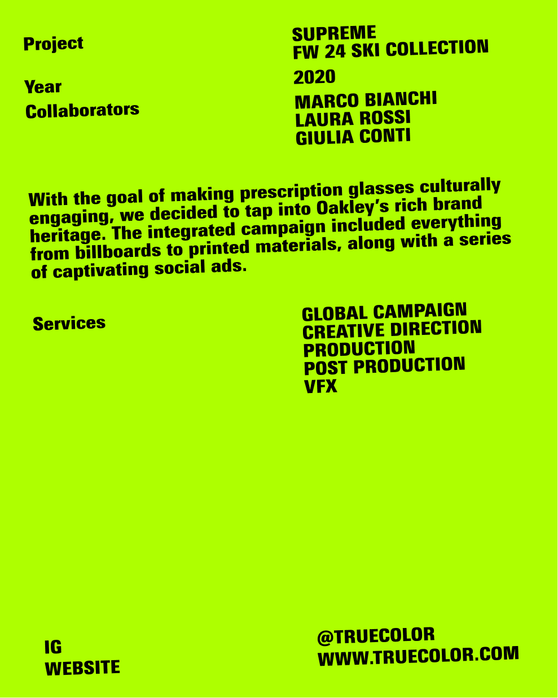
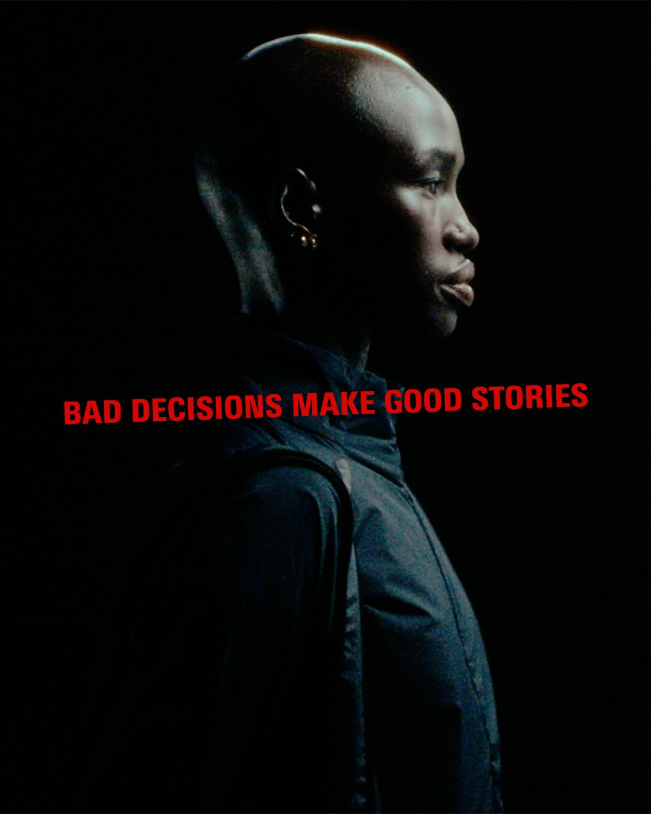
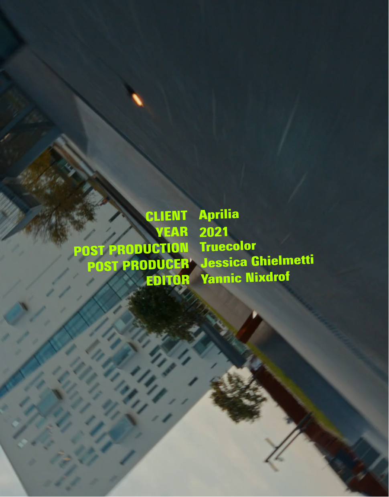
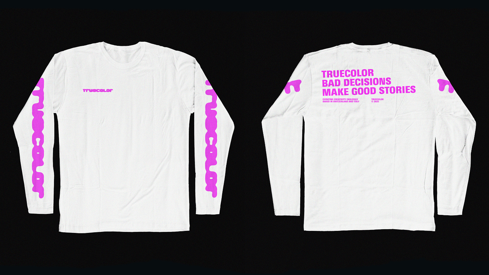
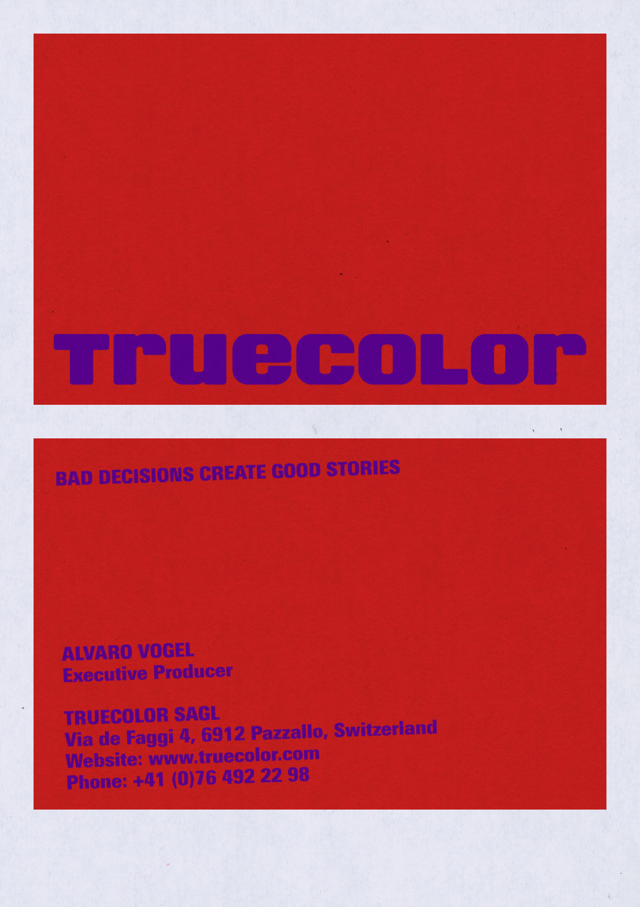
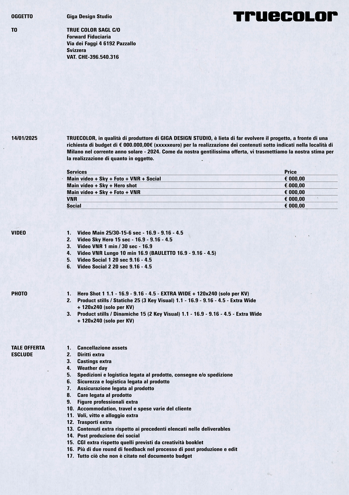

Truecolor is a production company based between Milan, Italy, and Switzerland, with the motto "Bad Decisions Make Good Stories," embodying a spontaneous and creative spirit that permeates their work in film and video production. Visit website.



For Truecolor, I developed their visual identity, drawing inspiration from the concept of "true color" — a dynamic pairing of bold, vibrant colors that create striking contrasts and convey a sense of energy and intensity, mirroring their approach to storytelling.



The typography, inspired by film credits, incorporates a tilted angle to evoke the grids of cameras or photographic lenses, while the dynamic logo plays with motion and focus, reflecting the fluidity of their video work; the visual identity extends across various materials, including business cards and the website, capturing these same principles.